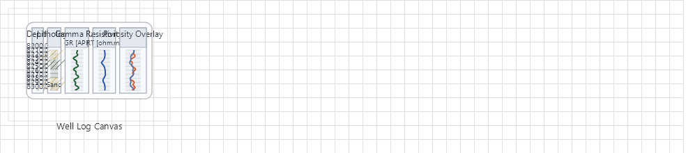

Well Logs Visualization Family
Oil & Gas well log visualization with layout engine, brush library, templates, and renderer supporting LAS 2.0/3.0 and DLIS/RP66 formats.

Overview
Base Control: WellLogCanvas
Namespace: Beep.Skia.WellLogs
The WellLogCanvas is the root control for this diagram family. It inherits MaterialControl and provides shared port management, styling, and template methods for all nodes in the family.
This family contains 6 node types.
Node Types
| Node Class | Shape | Description |
|---|---|---|
WellLogModels | N/A (data layer) | LAS 2.0/3.0 and DLIS/RP66 file parsing. Curve data models, well header, and metadata. |
WellLogCanvas | Canvas container | Main canvas with depth range, track management, grid display, and zoom/scroll. |
WellLogLayoutEngine | N/A (layout) | Track layout calculation: widths, headers, depth grids, curve scaling. |
WellLogRenderer | N/A (rendering) | SkiaSharp-based renderer for curves, fills, lithology patterns, and annotations. |
WellLogBrushLibrary | N/A (styling) | Pre-built brush/fill patterns for lithology: sandstone, shale, limestone, etc. |
WellLogTemplates | N/A (templates) | Pre-configured track templates: Gamma Ray, Resistivity, Density, Neutron, Sonic. |
WellLogModels
LAS 2.0/3.0 and DLIS/RP66 file parsing. Curve data models, well header, and metadata.
| Shape | N/A (data layer) |
|---|---|
| Input Ports | N/A |
| Output Ports | N/A |
WellLogCanvas
Main canvas with depth range, track management, grid display, and zoom/scroll.
| Shape | Canvas container |
|---|---|
| Input Ports | N/A |
| Output Ports | N/A |
WellLogLayoutEngine
Track layout calculation: widths, headers, depth grids, curve scaling.
| Shape | N/A (layout) |
|---|---|
| Input Ports | N/A |
| Output Ports | N/A |
WellLogRenderer
SkiaSharp-based renderer for curves, fills, lithology patterns, and annotations.
| Shape | N/A (rendering) |
|---|---|
| Input Ports | N/A |
| Output Ports | N/A |
WellLogBrushLibrary
Pre-built brush/fill patterns for lithology: sandstone, shale, limestone, etc.
| Shape | N/A (styling) |
|---|---|
| Input Ports | N/A |
| Output Ports | N/A |
WellLogTemplates
Pre-configured track templates: Gamma Ray, Resistivity, Density, Neutron, Sonic.
| Shape | N/A (templates) |
|---|---|
| Input Ports | N/A |
| Output Ports | N/A |
Connection Points
Every node in this family exposes connection points (ports) for linking to other nodes. Port positions are computed lazily by LayoutPorts(), which runs when MarkPortsDirty() flags the layout as stale after a move or resize.
| Node Class | Input Ports | Output Ports | Extra |
|---|---|---|---|
WellLogModels | N/A | N/A | — |
WellLogCanvas | N/A | N/A | — |
WellLogLayoutEngine | N/A | N/A | — |
WellLogRenderer | N/A | N/A | — |
WellLogBrushLibrary | N/A | N/A | — |
WellLogTemplates | N/A | N/A | — |
Connection Conventions
When building diagrams with this family, follow these conventions:
- Depth axis runs from top (shallow) to bottom (deep)
- Multiple tracks share the same depth column
- Curves are displayed per-track with independent scales
Usage Example
Complete example showing creation, node placement, and connection:
C# Example
// Load LAS file
var lasData = WellLogModels.LoadFromLas("well.las");
// Create canvas
var canvas = new WellLogCanvas
{
X = 50, Y = 50,
Width = 800, Height = 600,
DepthStart = 0,
DepthEnd = 5000
};
// Configure tracks
var track1 = new WellLogTemplates.GammaRayTrack();
var track2 = new WellLogTemplates.ResistivityTrack();
canvas.AddTrack(track1);
canvas.AddTrack(track2);
// Set data and render
canvas.SetData(lasData);
var renderer = new WellLogRenderer(canvas);
renderer.Render(surface, canvas);